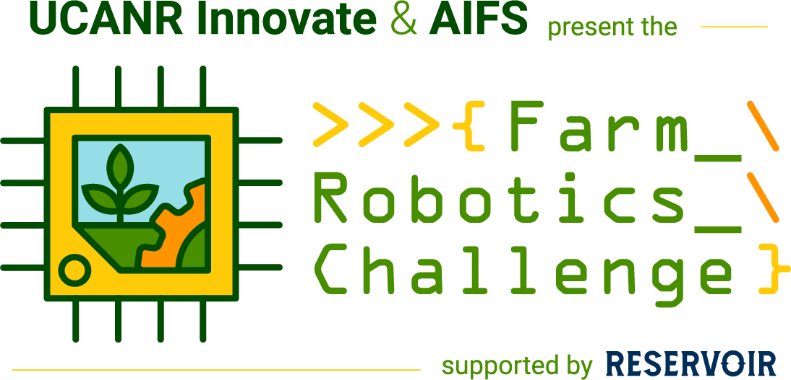
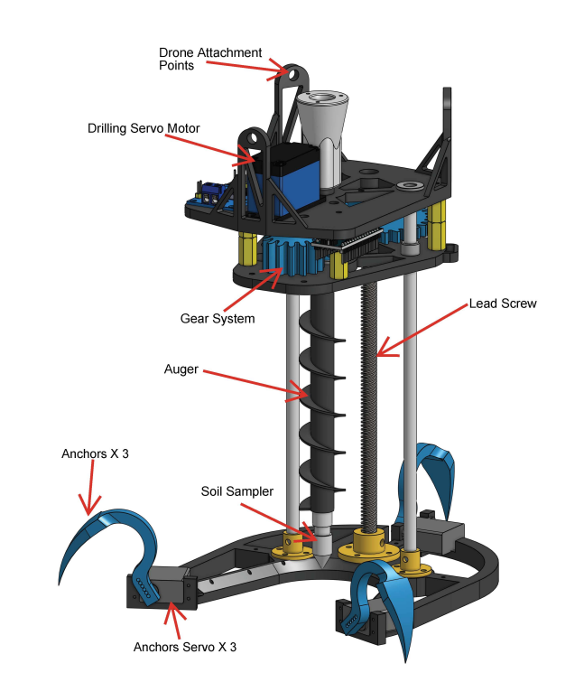

Download the official 41-page technical documentation submitted detailing system architecture, mechatronics, and full field evaluation.
"Systems, Devices, and Methods for Measuring Soil Parameters Using an Unmanned Aerial Vehicle" (Docket: MIT 27192J USPRO). Filed jointly with MIT & Olin College in 2026.
HydroFleet is an autonomous multi-drone system developed in collaboration with a research team at the Massachusetts Institute of Technology (MIT). The system enables data-driven precision irrigation by generating high-resolution soil moisture mapping data, helping farms increase yields while reducing water and energy costs.
The HydroFleet project was highly successful, winning the prestigious Excellence in Drone Applications Award at the Farm Robotics Challenge for its innovative coordinated aerial design and robust mechatronic execution.
By implementing variable-rate irrigation (VRI) driven by HydroFleet maps, agricultural operations can increase crop yields by up to 15% while simultaneously cutting water and energy expenses by 25% to 40%.
The underlying technology is the subject of a newly filed Utility Patent Application with the U.S. Patent and Trademark Office. As a core mechanical engineer on the team, I designed, simulated, and fabricated the entire Soil Probing Module (SPM)—a novel electromechanical payload that enables a drone to lower, anchor, and physically drill a capacitive moisture probe into soil to a depth of over 5 inches, capturing direct ground-truth measurements without landing.
Developing a soil probing mechanism capable of generating the high linear forces needed to penetrate compacted clay, while remaining within a strict 600g payload weight budget, was the core mechanical challenge of the project.

While early prototypes utilized two independent motors to manage linear feed and rotation separately, I engineered a highly optimized single-motor gear drive system utilizing a 25kg/cm continuous servo motor. By routing the output through a custom-machined 1:1:2 gear ratio train, the rotation of the 3D-printed helical auger is perfectly synchronized with its downward linear descent along a fixed trapezoidal lead screw (Tr8x8). This forces the auger thread to cut precisely into the soil at its natural pitch rate, drastically reducing the torque required for penetration and saving significant motor weight.
Reacting to the rotational torque of drilling in compacted clay would spin the suspended drone out of control. To prevent this, I developed an active anchoring system using three high-torque coreless micro-servos (MEUS Racing, 8.5kg/cm) spaced at 120-degree intervals around the base plate. These deploy curved, tapered circular claws into the soil, while static nails on the underside of the pocketed aluminum base plate prevent rotation.
To cut cleanly, the capacitive sensor body must rotate in unison with the auger. This created a major electrical failure mode as wires would twist and snap. To solve this, I integrated a 6-wire electrical slip ring directly on top of the rotating carriage. This maintains noise-free, continuous data connectivity between the rotating capacitive sensor and the stationary Arduino Nano microcontroller.
To read moisture, we utilized a capacitive probe from a General Tools DSMM500. I discarded the bulky 300g housing and built a custom signal-conditioning circuit using an LMC555 CMOS Timer configured in astable mode. The probe acts as a dynamic capacitor; as Volumetric Water Content increases, capacitance shifts, altering the output pulse frequency. This frequency is converted into an analog voltage read by the Arduino Nano.
To prevent electromagnetic noise from the adjacent servos and brushless drone motors from corrupting the sensor readings over the 2-meter slung cable, we implemented a robust CAN bus network using an MCP2515 CAN transceiver shield on the Arduino Nano, communicating with a Waveshare USB-CAN-A converter on the flight companion PC.
A single, ready-to-deploy unit of HydroFleet represents a total material cost of $1,846.83, split between the custom mechatronic sampler module ($455.11) and the autonomous flight platform ($1,391.72).
| Item Description | Purpose / Application | Unit Cost |
|---|---|---|
| 1. Soil Probing Module (SPM) | ||
| DSMM500 Soil Moisture Probe | Soil Dielectric / Capacitance Sensing | $221.64 |
| MEUS Racing 8.5kg/cm Coreless Servos (x3) | Active Anchoring Claw Deployment | $101.97 |
| Arducam 2MP Color Camera | Downward Visual Probing Verification | $59.99 |
| TD-8825MG Digital 25kg/cm Servo | Synchronized Drive System Actuation | $19.99 |
| 200mm Tr8x8 Lead Screw & Nut | Linear Carriage Feed and Translation | $8.19 |
| Arduino Nano ATmega328P | Onboard Low-Level Microcontroller | $3.79 |
| HiLetgo Nano Terminal Board | Breakout and Component Wiring Shield | $2.93 |
| MCP2515 CAN Bus Transceiver | Noise-Free Differential Communication | $2.66 |
| HiLetgo XL4015 Buck Converter | Voltage Stepdown (14.8V to 8.4V) | $3.16 |
| HC-SR04 Ultrasonic Distance Sensor | Vertical Carriage Depth Feedback | $1.99 |
| Miscellaneous Hardware | Carbon fiber tubes, custom 3D gears, fasteners | $28.79 |
| SOIL SAMPLING MODULE TOTAL | Weight: 570g Payload | $455.11 |
| 2. UAV Flight Platform | ||
| Pixhawk 6X Flight Controller | Low-Level Flight Stabilization & Controls | $309.99 |
| DroneCAN F9P Rover RTK GPS | High-Precision, Noise-Free GNSS Positioning | $296.99 |
| Asus NUC Companion Computer | High-Level ROS2 Offboard Orchestration | $289.78 |
| Holybro X500 V2 Frame Kit | Quadcopter Structural Carbon Fiber Frame | $260.99 |
| FlySky RC Controller & Receiver | Manual Overrides / Emergency Fallback | $64.99 |
| Arducam Global Shutter Camera | Downward Visual Human Detection | $59.99 |
| Holybro Telemetry Radio (915MHz) | Real-Time Data Streaming to Ground Station | $58.99 |
| 4S 4000mAh LiPo Battery Pack | Swarm Flight System Power Source | $50.00 |
| UAV FLIGHT PLATFORM TOTAL | Thrust-to-Weight Ratio: 2.2:1 | $1,391.72 |
| GRAND TOTAL PER UNIT | Full System (BOM Only) | $1,846.83 |
We validated the fully integrated HydroFleet platform through extensive field testing under realistic agricultural conditions at Powisset Farm in Dover, MA, a 109-acre organic Community Supported Agriculture (CSA) vegetable farm.
Achieving a reliable, robust, and lightweight system required multiple architectural pivots. Below is the summary of major engineering challenges and the design adaptations implemented:
| Engineering Challenge | Iterative Solution & Adaptation |
|---|---|
| Severe Slung Payload Oscillations | Initial tests suspending the 570g payload from a single point caused severe rotational transfer, turning the drone in flight. I resolved this by designing a 3-point bridle line utilizing a high-tensile braided cord coupled to a low-friction marine fishing swivel, completely isolating payload rotation from the airframe dynamics. |
| Excessive Stepper Motor Weight | Early prototypes utilized heavy dual stepper motors for carriage translation and auger rotation. To hit our 600g budget, I replaced both with a single continuous-rotation servo motor and engineered a custom 3D-printed 1:1:2 ratio gear system to drive both axes simultaneously. |
| Insufficient Anchoring Force | When drilling into compacted clay, the vertical resistance forced the sampler upward, lifting it off the ground. We upgraded passive spikes and 9g servos to three active 8.5kg/cm coreless servos and tapered circular claws. This allowed the claws to slide deep into clay perpendicular to the normal force of the auger. |
| High Electromagnetic Noise | High-frequency noise from the drone's ESCs and brushless motors corrupted the analog sensor lines. We isolated the signals by implementing a local CAN bus network utilizing an MCP2515 CAN controller on the sampler's Arduino Nano, transmitting differential signals over the 2-meter line. |